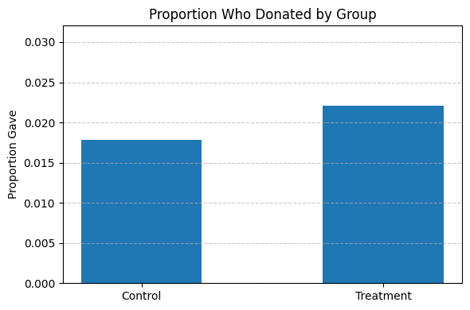

import pandas as pdExperimental Results
df = pd.read_stata('karlan_list_2007.dta')df.describe()| treatment | control | ratio2 | ratio3 | size25 | size50 | size100 | sizeno | askd1 | askd2 | ... | redcty | bluecty | pwhite | pblack | page18_39 | ave_hh_sz | median_hhincome | powner | psch_atlstba | pop_propurban | |
|---|---|---|---|---|---|---|---|---|---|---|---|---|---|---|---|---|---|---|---|---|---|
| count | 50083.000000 | 50083.000000 | 50083.000000 | 50083.000000 | 50083.000000 | 50083.000000 | 50083.000000 | 50083.000000 | 50083.000000 | 50083.000000 | ... | 49978.000000 | 49978.000000 | 48217.000000 | 48047.000000 | 48217.000000 | 48221.000000 | 48209.000000 | 48214.000000 | 48215.000000 | 48217.000000 |
| mean | 0.666813 | 0.333187 | 0.222311 | 0.222211 | 0.166723 | 0.166623 | 0.166723 | 0.166743 | 0.222311 | 0.222291 | ... | 0.510245 | 0.488715 | 0.819599 | 0.086710 | 0.321694 | 2.429012 | 54815.700533 | 0.669418 | 0.391661 | 0.871968 |
| std | 0.471357 | 0.471357 | 0.415803 | 0.415736 | 0.372732 | 0.372643 | 0.372732 | 0.372750 | 0.415803 | 0.415790 | ... | 0.499900 | 0.499878 | 0.168561 | 0.135868 | 0.103039 | 0.378115 | 22027.316665 | 0.193405 | 0.186599 | 0.258654 |
| min | 0.000000 | 0.000000 | 0.000000 | 0.000000 | 0.000000 | 0.000000 | 0.000000 | 0.000000 | 0.000000 | 0.000000 | ... | 0.000000 | 0.000000 | 0.009418 | 0.000000 | 0.000000 | 0.000000 | 5000.000000 | 0.000000 | 0.000000 | 0.000000 |
| 25% | 0.000000 | 0.000000 | 0.000000 | 0.000000 | 0.000000 | 0.000000 | 0.000000 | 0.000000 | 0.000000 | 0.000000 | ... | 0.000000 | 0.000000 | 0.755845 | 0.014729 | 0.258311 | 2.210000 | 39181.000000 | 0.560222 | 0.235647 | 0.884929 |
| 50% | 1.000000 | 0.000000 | 0.000000 | 0.000000 | 0.000000 | 0.000000 | 0.000000 | 0.000000 | 0.000000 | 0.000000 | ... | 1.000000 | 0.000000 | 0.872797 | 0.036554 | 0.305534 | 2.440000 | 50673.000000 | 0.712296 | 0.373744 | 1.000000 |
| 75% | 1.000000 | 1.000000 | 0.000000 | 0.000000 | 0.000000 | 0.000000 | 0.000000 | 0.000000 | 0.000000 | 0.000000 | ... | 1.000000 | 1.000000 | 0.938827 | 0.090882 | 0.369132 | 2.660000 | 66005.000000 | 0.816798 | 0.530036 | 1.000000 |
| max | 1.000000 | 1.000000 | 1.000000 | 1.000000 | 1.000000 | 1.000000 | 1.000000 | 1.000000 | 1.000000 | 1.000000 | ... | 1.000000 | 1.000000 | 1.000000 | 0.989622 | 0.997544 | 5.270000 | 200001.000000 | 1.000000 | 1.000000 | 1.000000 |
8 rows × 48 columns
df.info()<class 'pandas.core.frame.DataFrame'>
RangeIndex: 50083 entries, 0 to 50082
Data columns (total 51 columns):
# Column Non-Null Count Dtype
--- ------ -------------- -----
0 treatment 50083 non-null int8
1 control 50083 non-null int8
2 ratio 50083 non-null category
3 ratio2 50083 non-null int8
4 ratio3 50083 non-null int8
5 size 50083 non-null category
6 size25 50083 non-null int8
7 size50 50083 non-null int8
8 size100 50083 non-null int8
9 sizeno 50083 non-null int8
10 ask 50083 non-null category
11 askd1 50083 non-null int8
12 askd2 50083 non-null int8
13 askd3 50083 non-null int8
14 ask1 50083 non-null int16
15 ask2 50083 non-null int16
16 ask3 50083 non-null int16
17 amount 50083 non-null float32
18 gave 50083 non-null int8
19 amountchange 50083 non-null float32
20 hpa 50083 non-null float32
21 ltmedmra 50083 non-null int8
22 freq 50083 non-null int16
23 years 50082 non-null float64
24 year5 50083 non-null int8
25 mrm2 50082 non-null float64
26 dormant 50083 non-null int8
27 female 48972 non-null float64
28 couple 48935 non-null float64
29 state50one 50083 non-null int8
30 nonlit 49631 non-null float64
31 cases 49631 non-null float64
32 statecnt 50083 non-null float32
33 stateresponse 50083 non-null float32
34 stateresponset 50083 non-null float32
35 stateresponsec 50080 non-null float32
36 stateresponsetminc 50080 non-null float32
37 perbush 50048 non-null float32
38 close25 50048 non-null float64
39 red0 50048 non-null float64
40 blue0 50048 non-null float64
41 redcty 49978 non-null float64
42 bluecty 49978 non-null float64
43 pwhite 48217 non-null float32
44 pblack 48047 non-null float32
45 page18_39 48217 non-null float32
46 ave_hh_sz 48221 non-null float32
47 median_hhincome 48209 non-null float64
48 powner 48214 non-null float32
49 psch_atlstba 48215 non-null float32
50 pop_propurban 48217 non-null float32
dtypes: category(3), float32(16), float64(12), int16(4), int8(16)
memory usage: 8.9 MBfrom scipy import stats
import statsmodels.api as sm
import statsmodels.formula.api as smf
# Separate data into treatment and control groups
treatment_group = df[df['treatment'] == 1]
control_group = df[df['control'] == 1]
# T-test: mrm2 (months since last donation)
ttest_result = stats.ttest_ind(treatment_group['mrm2'].dropna(), control_group['mrm2'].dropna(), equal_var=False)
# Linear regression: mrm2 ~ treatment
df_reg = df[['mrm2', 'treatment']].dropna()
reg_result = smf.ols('mrm2 ~ treatment', data=df_reg).fit()
ttest_result, reg_result.summary()(TtestResult(statistic=0.11953155228177251, pvalue=0.9048549631450832, df=33394.47581389535),
<class 'statsmodels.iolib.summary.Summary'>
"""
OLS Regression Results
==============================================================================
Dep. Variable: mrm2 R-squared: 0.000
Model: OLS Adj. R-squared: -0.000
Method: Least Squares F-statistic: 0.01428
Date: Wed, 23 Apr 2025 Prob (F-statistic): 0.905
Time: 15:29:10 Log-Likelihood: -1.9585e+05
No. Observations: 50082 AIC: 3.917e+05
Df Residuals: 50080 BIC: 3.917e+05
Df Model: 1
Covariance Type: nonrobust
==============================================================================
coef std err t P>|t| [0.025 0.975]
------------------------------------------------------------------------------
Intercept 12.9981 0.094 138.979 0.000 12.815 13.181
treatment 0.0137 0.115 0.119 0.905 -0.211 0.238
==============================================================================
Omnibus: 8031.352 Durbin-Watson: 2.004
Prob(Omnibus): 0.000 Jarque-Bera (JB): 12471.135
Skew: 1.163 Prob(JB): 0.00
Kurtosis: 3.751 Cond. No. 3.23
==============================================================================
Notes:
[1] Standard Errors assume that the covariance matrix of the errors is correctly specified.
""")Charitable Contribution Made
First, I analyze whether matched donations lead to an increased response rate of making a donation.
todo: make a barplot with two bars. Each bar is the proportion of people who donated. One bar for treatment and one bar for control.
import matplotlib.pyplot as plt
gave_by_group = df.groupby("treatment")["gave"].mean().reset_index()
gave_by_group["group"] = gave_by_group["treatment"].map({0: "Control", 1: "Treatment"})
plt.figure(figsize=(6, 4))
plt.bar(gave_by_group["group"], gave_by_group["gave"], width=0.5)
plt.title("Proportion Who Donated by Group")
plt.ylabel("Proportion Gave")
plt.ylim(0, gave_by_group["gave"].max() + 0.01)
plt.grid(axis='y', linestyle='--', alpha=0.7)
plt.tight_layout()
plt.show()
todo: run a t-test between the treatment and control groups on the binary outcome of whether any charitable donation was made. Also run a bivariate linear regression that demonstrates the same finding. (It may help to confirm your calculations match Table 2a Panel A.) Report your statistical results and interpret them in the context of the experiment (e.g., if you found a difference with a small p-value or that was statistically significant at some threshold, what have you learned about human behavior? Use mostly English words, not numbers or stats, to explain your finding.)
# Re-import libraries and reload data due to kernel reset
import pandas as pd
from scipy.stats import ttest_ind
import statsmodels.formula.api as smf
# Load data
df = pd.read_stata("karlan_list_2007.dta")
# Ensure binary outcome is correctly typed
df['gave'] = df['gave'].astype(int)
# T-test: response rate (gave) between treatment and control groups
gave_treat = df[df['treatment'] == 1]['gave']
gave_control = df[df['control'] == 1]['gave']
t_stat, p_val = ttest_ind(gave_treat, gave_control, equal_var=False)
# Regression: response as a function of treatment
reg_gave = smf.ols('gave ~ treatment', data=df).fit()
t_stat, p_val, reg_gave.summary()(3.2094621908279835,
0.0013309823450914173,
<class 'statsmodels.iolib.summary.Summary'>
"""
OLS Regression Results
==============================================================================
Dep. Variable: gave R-squared: 0.000
Model: OLS Adj. R-squared: 0.000
Method: Least Squares F-statistic: 9.618
Date: Wed, 23 Apr 2025 Prob (F-statistic): 0.00193
Time: 21:04:50 Log-Likelihood: 26630.
No. Observations: 50083 AIC: -5.326e+04
Df Residuals: 50081 BIC: -5.324e+04
Df Model: 1
Covariance Type: nonrobust
==============================================================================
coef std err t P>|t| [0.025 0.975]
------------------------------------------------------------------------------
Intercept 0.0179 0.001 16.225 0.000 0.016 0.020
treatment 0.0042 0.001 3.101 0.002 0.002 0.007
==============================================================================
Omnibus: 59814.280 Durbin-Watson: 2.005
Prob(Omnibus): 0.000 Jarque-Bera (JB): 4317152.727
Skew: 6.740 Prob(JB): 0.00
Kurtosis: 46.440 Cond. No. 3.23
==============================================================================
Notes:
[1] Standard Errors assume that the covariance matrix of the errors is correctly specified.
""")import statsmodels.api as sm
# Prepare the variables
X = sm.add_constant(df["treatment"])
y = df["gave"]
# Run the Probit regression
probit_model = sm.Probit(y, X)
probit_results = probit_model.fit()
probit_results.summary()Optimization terminated successfully.
Current function value: 0.100443
Iterations 7| Dep. Variable: | gave | No. Observations: | 50083 |
| Model: | Probit | Df Residuals: | 50081 |
| Method: | MLE | Df Model: | 1 |
| Date: | Wed, 23 Apr 2025 | Pseudo R-squ.: | 0.0009783 |
| Time: | 21:22:42 | Log-Likelihood: | -5030.5 |
| converged: | True | LL-Null: | -5035.4 |
| Covariance Type: | nonrobust | LLR p-value: | 0.001696 |
| coef | std err | z | P>|z| | [0.025 | 0.975] | |
| const | -2.1001 | 0.023 | -90.073 | 0.000 | -2.146 | -2.054 |
| treatment | 0.0868 | 0.028 | 3.113 | 0.002 | 0.032 | 0.141 |
# Subset the data for different match ratios
# According to the dataset: ratio = '1', '2', '3' for 1:1, 2:1, 3:1
df_ratio = df[df["treatment"] == 1].copy()
df_ratio["ratio"] = df_ratio["ratio"].astype(str)
# Extract binary 'gave' for each match ratio group
gave_1_1 = df_ratio[df_ratio["ratio"] == "1"]["gave"]
gave_2_1 = df_ratio[df_ratio["ratio"] == "2"]["gave"]
gave_3_1 = df_ratio[df_ratio["ratio"] == "3"]["gave"]
# Perform t-tests between match ratio groups
ttest_1_vs_2 = ttest_ind(gave_1_1, gave_2_1, equal_var=False)
ttest_1_vs_3 = ttest_ind(gave_1_1, gave_3_1, equal_var=False)
ttest_2_vs_3 = ttest_ind(gave_2_1, gave_3_1, equal_var=False)
ttest_1_vs_2, ttest_1_vs_3, ttest_2_vs_3(TtestResult(statistic=-0.965048975142932, pvalue=0.33453078237183076, df=22225.07770983836),
TtestResult(statistic=-1.0150174470156275, pvalue=0.31010856527625774, df=22215.0529778684),
TtestResult(statistic=-0.05011581369764474, pvalue=0.9600305476940865, df=22260.84918918778))# Ensure 'gave' is binary
df['gave'] = df['gave'].astype(int)
# Create dummy variables for each match ratio
# This is only for treatment group, so filter and prepare accordingly
df_ratio = df[df['treatment'] == 1].copy()
df_ratio['ratio'] = df_ratio['ratio'].astype(str)
# Create dummy variables: ratio1, ratio2, ratio3
df_ratio['ratio1'] = (df_ratio['ratio'] == '1').astype(int)
df_ratio['ratio2'] = (df_ratio['ratio'] == '2').astype(int)
df_ratio['ratio3'] = (df_ratio['ratio'] == '3').astype(int)
# Regression: gave ~ ratio1 + ratio2 + ratio3 (no intercept)
import statsmodels.api as sm
X = df_ratio[['ratio1', 'ratio2', 'ratio3']]
y = df_ratio['gave']
model = sm.OLS(y, X).fit()
model.summary()| Dep. Variable: | gave | R-squared: | 0.000 |
| Model: | OLS | Adj. R-squared: | -0.000 |
| Method: | Least Squares | F-statistic: | 0.6454 |
| Date: | Wed, 23 Apr 2025 | Prob (F-statistic): | 0.524 |
| Time: | 21:40:37 | Log-Likelihood: | 16688. |
| No. Observations: | 33396 | AIC: | -3.337e+04 |
| Df Residuals: | 33393 | BIC: | -3.334e+04 |
| Df Model: | 2 | ||
| Covariance Type: | nonrobust |
| coef | std err | t | P>|t| | [0.025 | 0.975] | |
| ratio1 | 0.0207 | 0.001 | 14.912 | 0.000 | 0.018 | 0.023 |
| ratio2 | 0.0226 | 0.001 | 16.267 | 0.000 | 0.020 | 0.025 |
| ratio3 | 0.0227 | 0.001 | 16.335 | 0.000 | 0.020 | 0.025 |
| Omnibus: | 38963.957 | Durbin-Watson: | 1.995 |
| Prob(Omnibus): | 0.000 | Jarque-Bera (JB): | 2506478.937 |
| Skew: | 6.511 | Prob(JB): | 0.00 |
| Kurtosis: | 43.394 | Cond. No. | 1.00 |
Notes:
[1] Standard Errors assume that the covariance matrix of the errors is correctly specified.